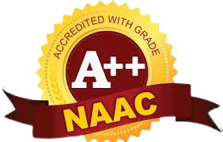
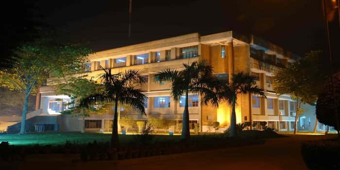

AJAY KUMAR GARG ENGINEERING COLLEGE
(Affiliated to Dr.APJ Abdul Kalam Technical University,Lucknow,UP,College Code - 027 )

SCALING THE ZENITH OF EXCELLENCE
Driven by its commitment to provide quality technical education, Ajay Kumar Garg Engineering College has become the best Engineering institution in Uttar Pradesh.
Ajay Kumar Garg Engineering College (AKGEC), Ghaziabad is affiliated to Dr. A.P.J. Abdul Kalam Technical University, Lucknow, and is approved by the All India Council for Technical Education.
The college was established in 1998 and offers B.Tech courses in nine disciplines of Engineering namely Computer Science and Engineering, Information Technology, Computer Science,
Computer Science & Information Technology,
Computer Science and Engineering (Artificial Intelligence & Machine Learning), Computer Science and Engineering (Data Science),
Computer Science and Engineering (Hindi), Artificial Intelligence & Machine Learning,
Electronics and Communication Engineering, Electrical and Electronics Engineering, Mechanical Engineering and Civil Engineering.

B.Tech programs in Computer Science and Engineering, Information Technology,
Electronics and Communication Engineering, Electrical and Electronics Engineering and Mechanical Engineering are accredited by NBA.
At the post graduate level, the College offers M.Tech in Electronics & Communication Engineering, Computer Science, Electrical and Electronics Engineering and Mechanical Engineering and the Master of Computer Applications course.
The college strives for excellence and has bee6 consistently maintaining excellent academic results and placements.
The college has the distinction of being the first and only college in UP to receive the Academic Excellence Award
for the Best Engineering College in UPTU (now AKTU) from H.E. the Governor of UP for two successive years.
Spread over 40 acre campus, AKGEC has excellent infrastructure with well-planned complexes for each department having spacious laboratories, class rooms equipped with state-of-the-art teaching aids, department libraries and faculty
cabins. Departmental laboratories have the latest equipment and relevant licensed software.